The Tension問題の核心
Amplify's ELA curriculum draws on a master library of thousands of vocabulary words, and curriculum authors needed to assemble and maintain custom word lists from that library for different grades, streams, and lesson plans. Doing this by hand — cross-checking spreadsheets, retyping definitions, catching duplicates — was slow and error-prone. There was no dependable way to see, at a glance, whether a word being added already existed elsewhere in the system. Amplifyの英語ELAカリキュラムは、数千語からなるマスター単語ライブラリを基盤としており、カリキュラム制作者は学年・ストリーム・レッスンプランごとにこのライブラリからカスタム単語リストを組み立て、維持する必要があった。スプレッドシートを突き合わせ、定義を手入力し、重複を目視で確認する — この手作業は時間がかかり、ミスも起こりやすかった。追加しようとしている単語がシステム内の他の場所にすでに存在するかどうかを、一目で確実に把握する手段がなかった。
My Approachアプローチ
I designed a dual-pane word list manager: the master "All Words" library on the left, the list being built on the right, both searchable and filterable by stream and grade. Authors could hand-pick words directly from the master list, or bulk-import a CSV — and when an import turned up malformed rows or duplicate entries, the interface surfaced them inline, with side-by-side comparison cards so authors could choose the master entry or the incoming one before anything was committed. Every destructive action, like removing a word from a list, got a confirmation step and an undo path. 左に全単語を収めたマスターライブラリ「All Words」、右に作成中のリストを配置したデュアルペイン構成の単語リスト管理ツールを設計した。両ペインともストリームや学年で検索・絞り込みができる。制作者はマスターリストから単語を直接選んで追加することも、CSVで一括インポートすることもできる。インポート時に不備のある行や重複した単語が見つかった場合は、その場でインライン表示し、マスター側と取り込み側のエントリーを並べたカードで、確定前にどちらを採用するか選べるようにした。リストから単語を削除するような破壊的な操作には、必ず確認ステップとアンドゥの経路を用意した。
Tools & Methodsツール＆手法
01 — The Tool: Manage Word Lists, from the master library to a table-driven authoring workspace.01 — ツール本体：マスターライブラリからテーブル駆動の制作ワークスペースへ。
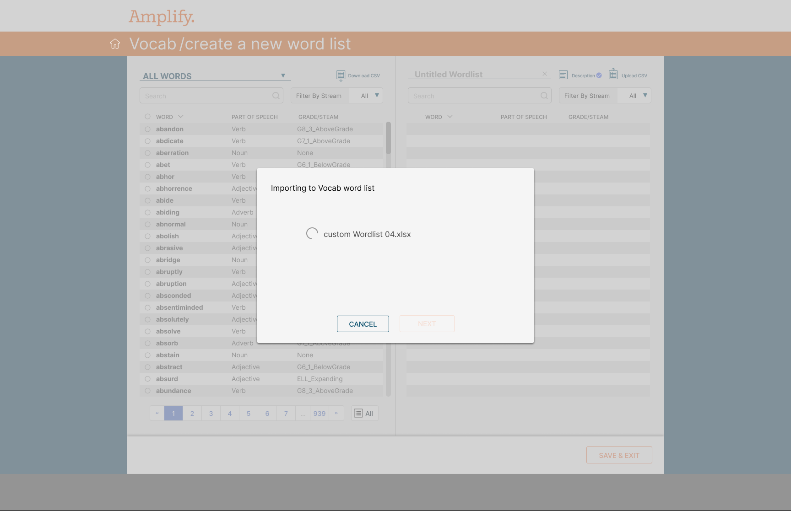
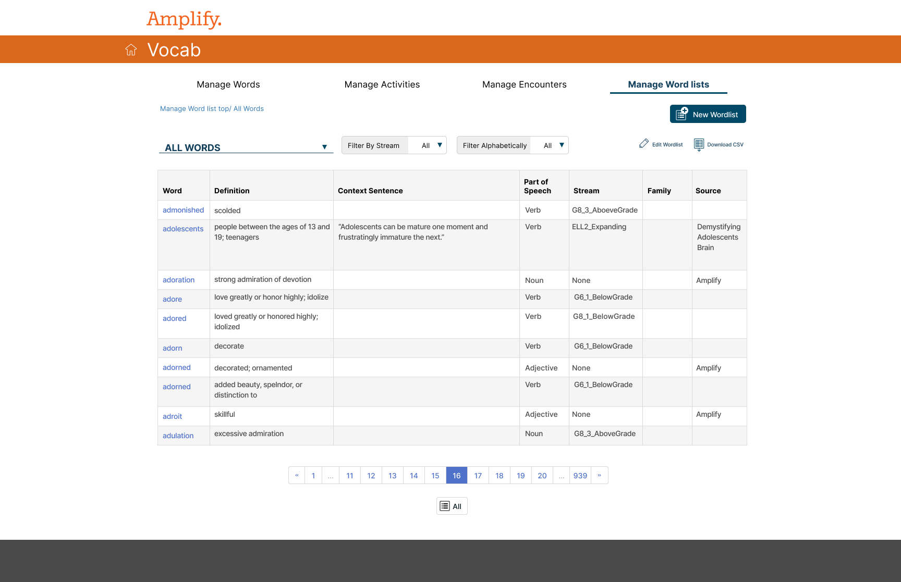
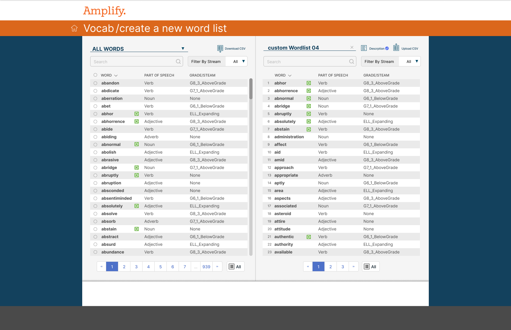
02 — Interaction Details: bulk import, inline validation, and safe editing states.02 — インタラクション詳細：一括インポート、インラインバリデーション、安全な編集状態。
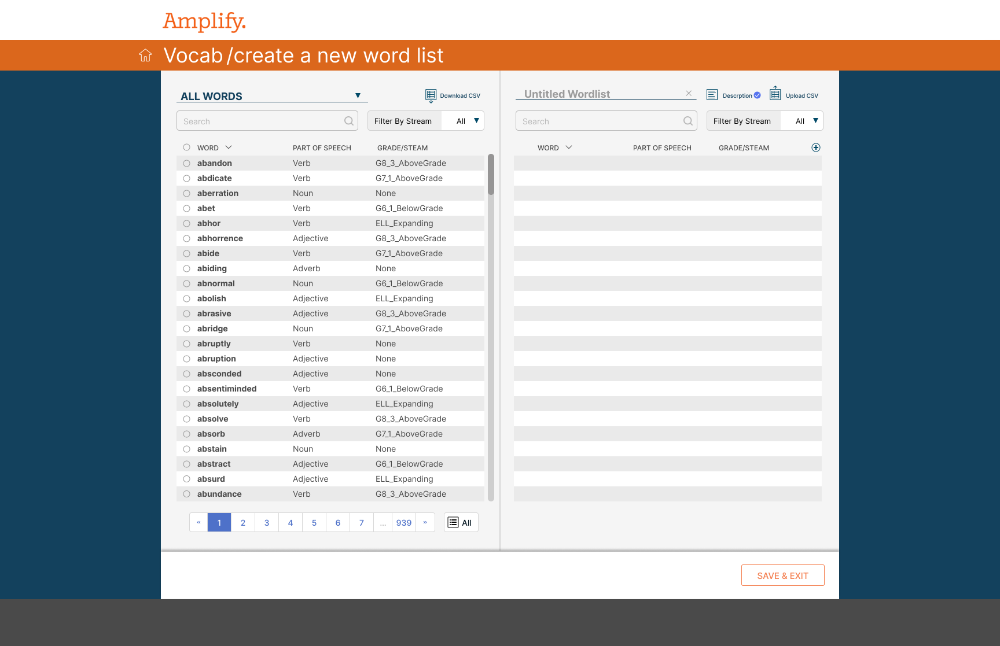
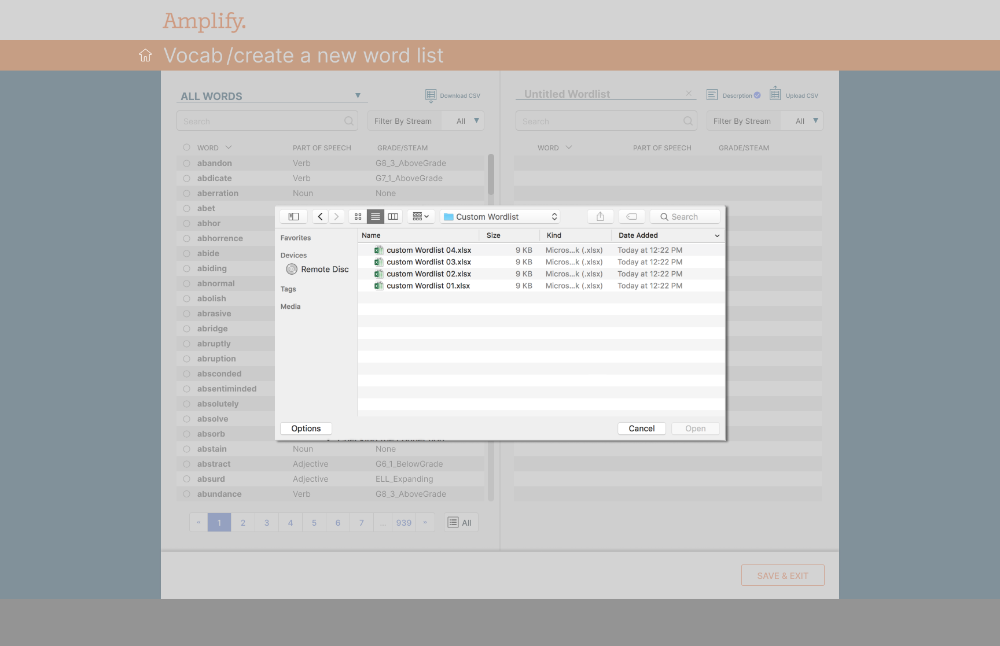
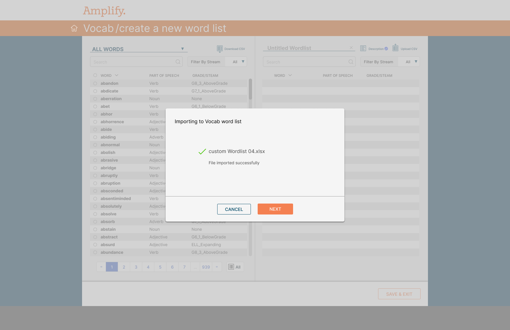
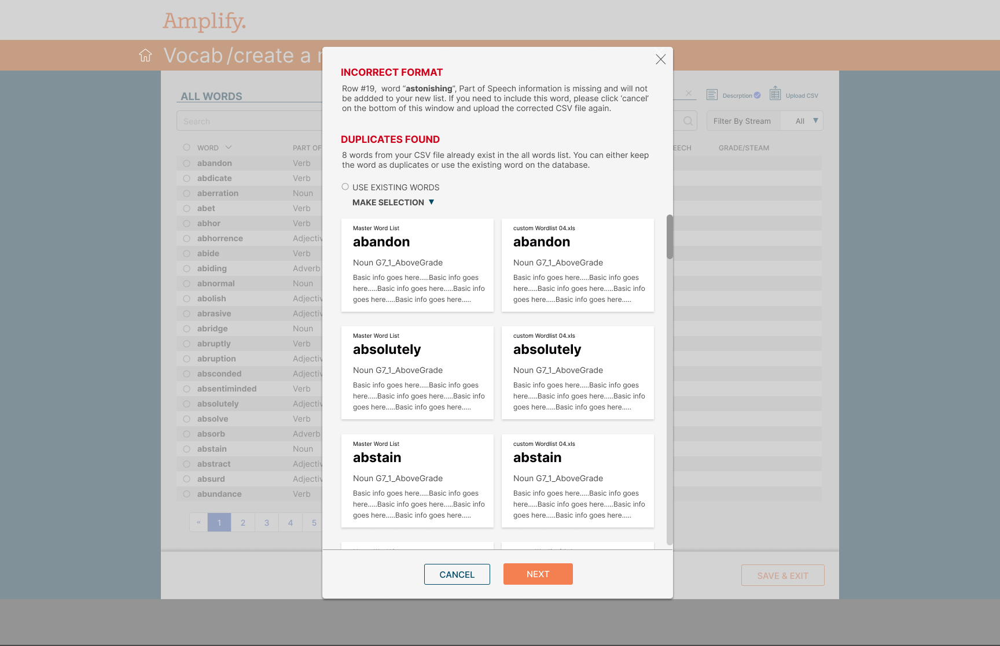
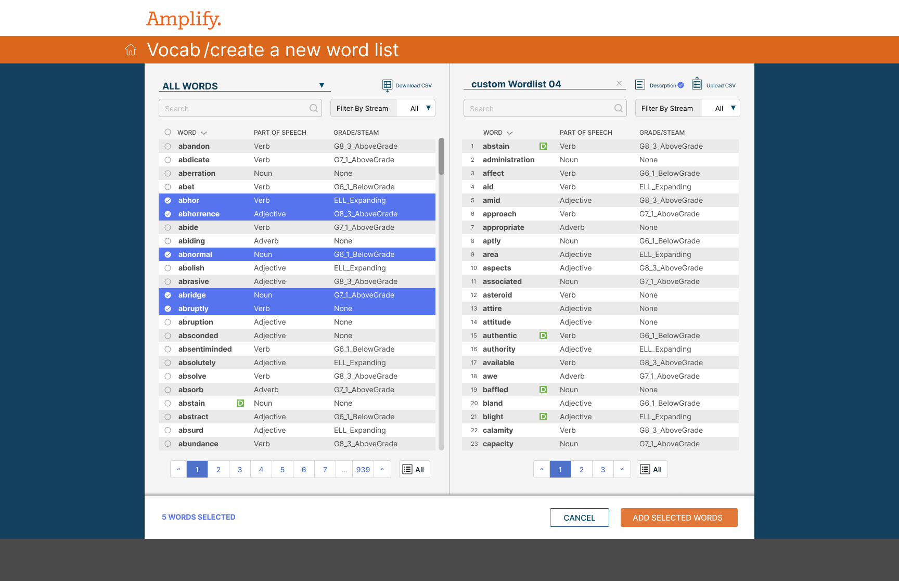
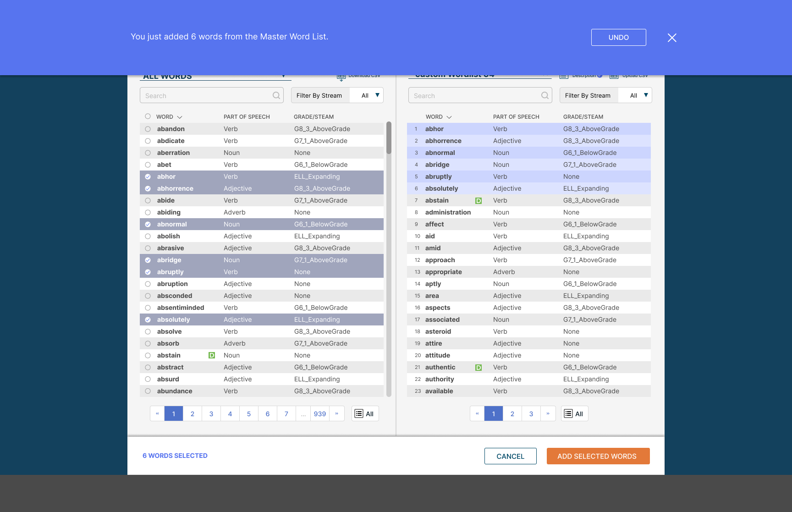
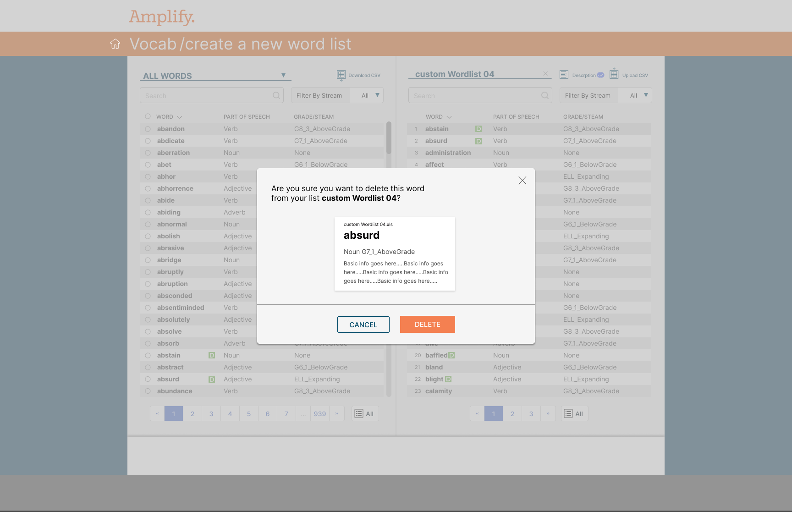
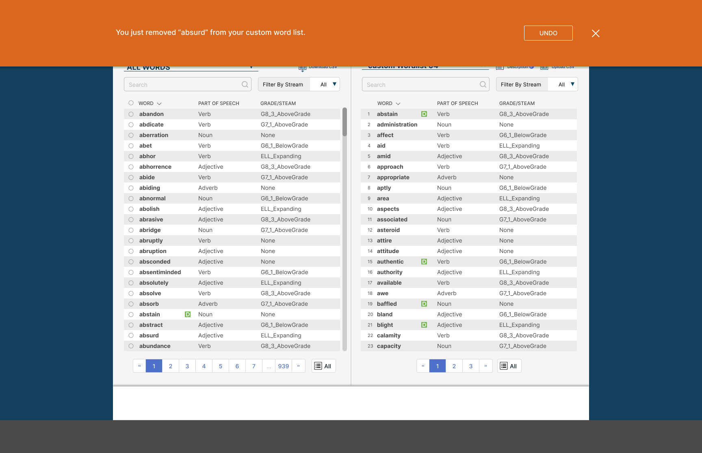
03 — Walkthrough03 — ウォークスルー
Deliverables成果物
- UX Research & Insight GenerationUXリサーチ＆インサイト
- Information Architecture情報設計
- Wireframing & Prototypingワイヤーフレーム＆プロトタイピング
- UI Design (Web App)UIデザイン（Webアプリ）
Methods手法
- Task Analysisタスク分析
- Content & Data Modelingコンテンツ＆データモデリング
- Usability Reviewユーザビリティレビュー
Teamチーム
- Curriculum Team (Domain Expert)カリキュラムチーム（ドメインエキスパート）
- Engineeringエンジニアリング
- QAQA